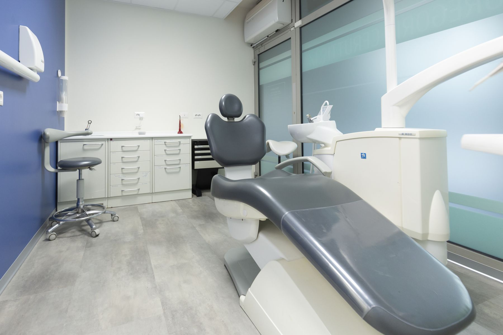
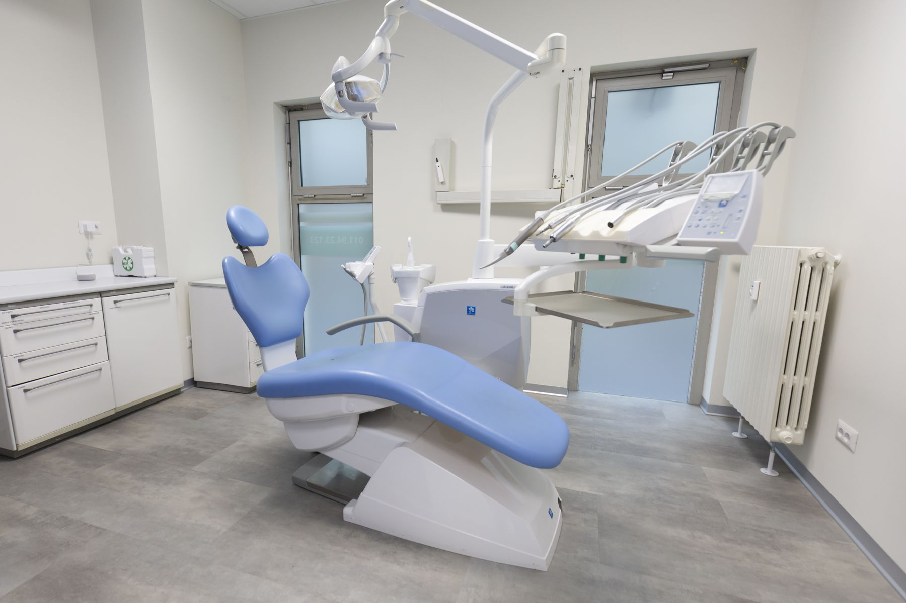
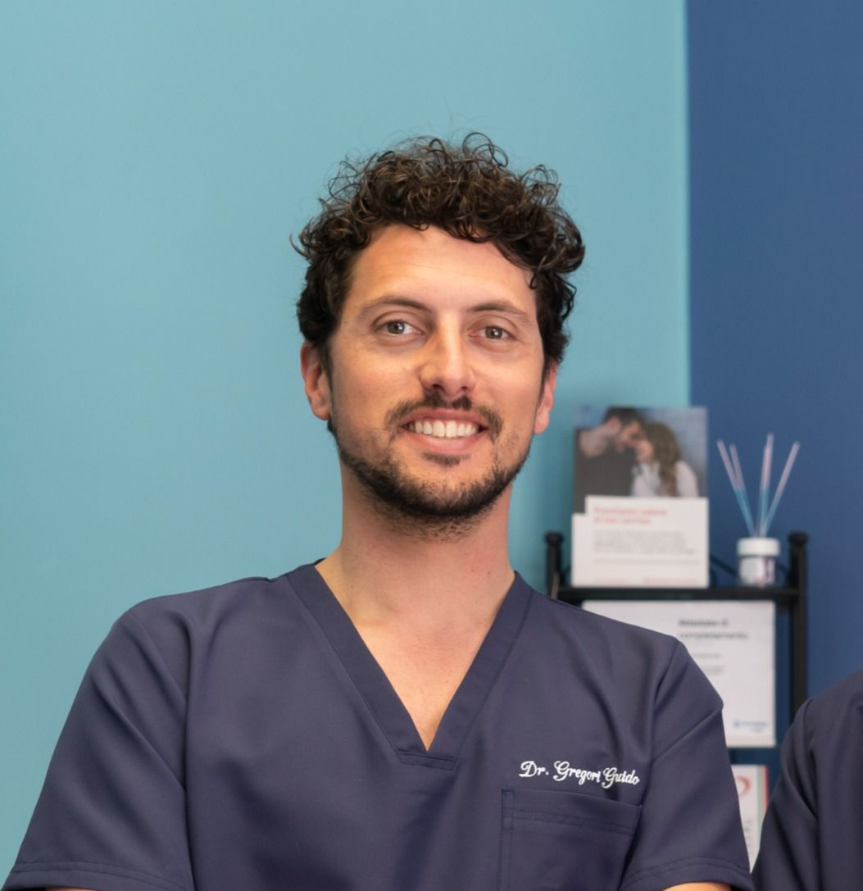
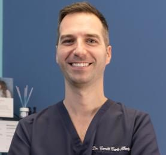
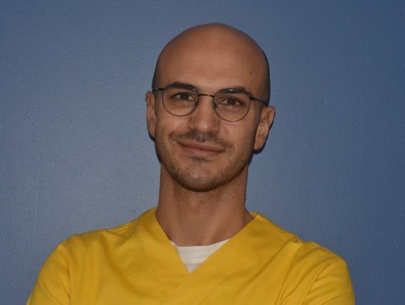

Il momento migliore per andare dal dentista è quando stai bene.
Uno studio giovane e moderno, con la TAC in studio e uno specialista per ogni cura: dalla prima visita dei bambini all'implantologia.


Il check-up, in quattro passi.
Anamnesi
Conosciamo le tue abitudini di igiene orale, le patologie passate e i disturbi che senti.
Visita approfondita
Ti visita l'odontoiatra più indicato per il tuo caso.
Radiografia digitale
Se serve, l'indagine radiografica più adatta, direttamente in studio.
Diagnosi e piano di cura
Una diagnosi chiara sullo stato di salute della bocca, con il relativo piano di cura.
Tutto il sorriso, in un solo studio.
Denti fissi in 8 ore.
Gli impianti a carico immediato permettono di recuperare subito la masticazione e l'estetica, ripristinando i denti mancanti con denti fissi. Per un dente singolo, la riabilitazione avviene tra i 3 e i 6 mesi dal posizionamento dell'impianto.
Ogni caso viene valutato durante la visita.



Ogni dottore, una specialità.
Ortodonzia, pedodonzia, endodonzia, protesi, chirurgia e implantologia: per offrirvi un servizio completo.
- Dott. Guido GregoriLaurea magistrale in Odontoiatria e Protesi Dentaria
- Dott. Carlo Alberto CeruttiLaurea magistrale in Odontoiatria e Protesi Dentaria
- Dott. Pier TutinoLaurea magistrale in Odontoiatria, specializzazione in Ortognatodonzia
- Marina e LauraSegreteria e assistenza alla poltrona
Tra i mattoni del centro storico.
Lo studio è nel cuore di Chieri, con parcheggi comodi: per curarti al meglio non hai bisogno di andare lontano.
- Telefono
- 011 942 3123 · 391 378 0157
- Orari comodi
- Dilazioni di pagamento
- Parcheggi comodi
- TAC in studio